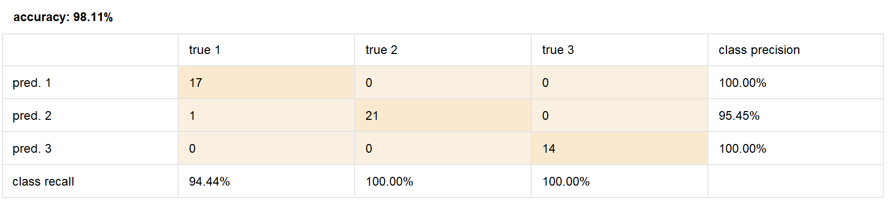
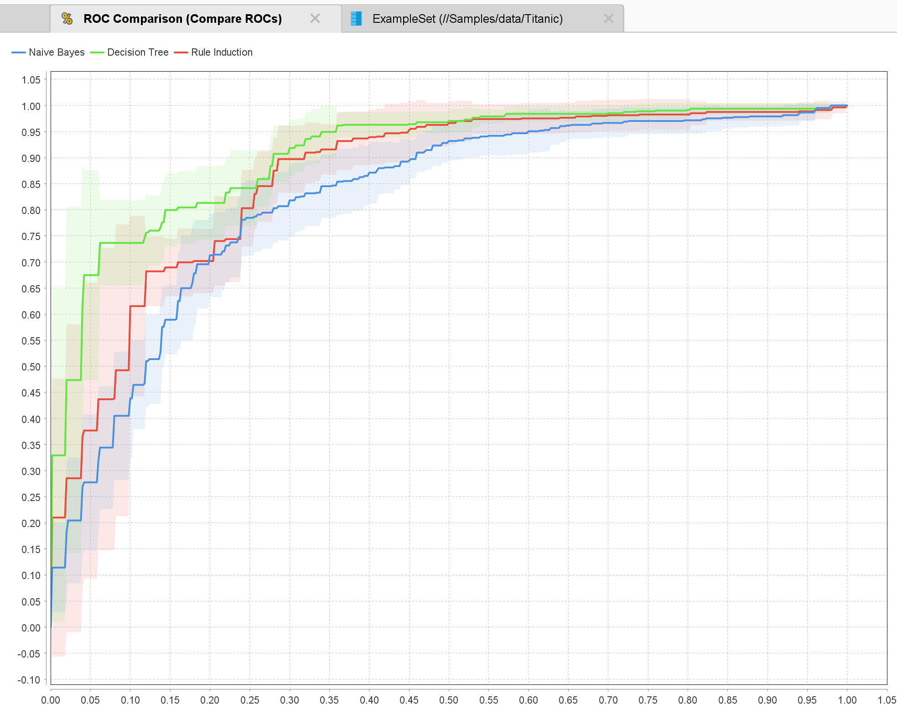
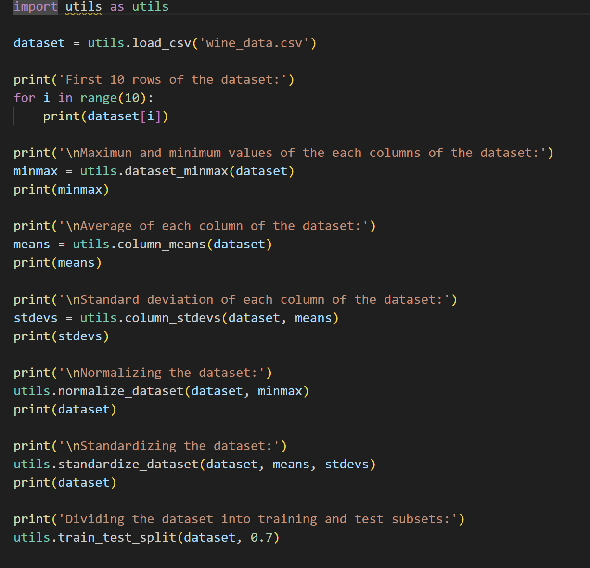
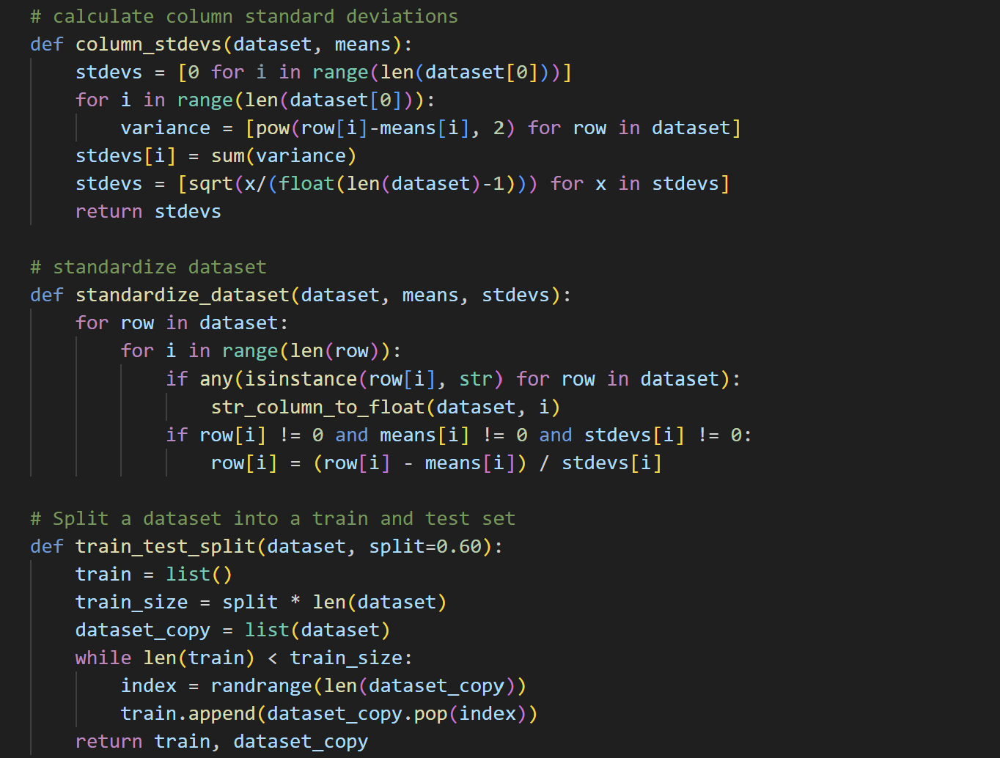

Take-home exercises
Practical Assignment 1
Exercise 1
Handling Missing Values:
I noticed that there were many attributes with missing data. First, I used the “Select
Attributes” tool to hide/remove the attributes that were not important for this tutorial.
Then, with the “Replace Missing Attributes” tool, I replaced the missing values with the
median. Finally, with “Filter Examples”, we eliminated all the rows that still had missing
columns.
Normalization and Outlier Detection:
I started by importing the dataset, then I removed some attributes that were not important.
After that, we normalized the data to be able to apply distance-based algorithms.
We then connected the operator to detect outliers, linked it, and added the operator “Filter
Examples,” where we set the outlier values to false.
Exercise 2
The first problem I encountered was that after downloading the dataset, it was not
downloaded as a CSV but as a .data file.
This was the first time I downloaded a dataset in this format, so I opened it in Excel to
convert it to CSV.
I noticed that the attribute names were missing, so I looked them up in the description and
added them. Finally, I exported it as a CSV and opened it in RapidMiner.
Problem:
Determine the origin of the wine based on the provided data.
Attributes:
- Wine class: Type of wine (1, 2, or 3), corresponding to the region of origin.
- Alcohol: Percentage of alcohol in the wine.
- Malic acid: Chemical compound contributing to the wine’s acidity.
- Ash: Mineral residue remaining after burning the wine.
- Alkalinity of ash: Measure of the alkalinity (ability to neutralize acids) in the ash.
- Magnesium: Magnesium content in the wine, in parts per million (ppm).
- Total phenols: Total amount of phenols, compounds affecting the flavor and color of the wine.
- Flavanoids: A subgroup of phenols, important for the flavor and color of the wine.
- Nonflavanoid phenols: Phenols that do not belong to the flavonoid group.
- Proanthocyanins: Tannins present in wine, affecting the flavor and color.
- Color intensity: The intensity of the wine’s color.
- Hue: Tone of the wine’s color.
- OD280/OD315 of diluted wines: Absorbance of diluted wine at 280 nm and 315 nm, a measure related to the phenol content.
- Proline: An amino acid that is a quality marker in wine.
RapidMiner shows in the statistics section that there are no missing values. It is also observed that there are no outliers, as there is no evidence in the bar charts indicating their presence.
Confusion Matrix Results:
After following the steps, I obtained the confusion matrix for both cases:
The confusion matrix is a table showing the performance of a classification model by comparing the predictions with the true labels, detailing true positives, false positives, true negatives, and false negatives for each class.
Class recall: It measures the proportion of positive instances correctly identified by the model, calculated as true positives divided by the sum of true positives and false negatives.
For the unnormalized/standardized dataset:

In general, the model had an accuracy of 96.00%
For class 1 (pred1), we see that Naive Bayes had 100% accuracy, meaning it always predicted
that the wine belonged to class 1 (vineyard 1) based on its characteristics.
For class 2 (pred2), the model achieved 92.45% accuracy and confused class 2 with class 1 on
four occasions.
For class 3, the model achieved 97.14% accuracy, misclassifying class 3 as class 2 once.
For the normalized and standardized dataset:

The model, after being normalized and standardized, achieved an accuracy of 98.11%. It only
misclassified class 2 as class 1 on one occasion.
Conclusion:
Preprocessing using normalization and standardization improved the model’s accuracy from
96.00% to 98.11%. The precision and recall also increased, especially in class 1 and class
2, indicating that the model’s classification ability improved, reducing errors.
Practical Assignment 2
Modeling:
I loaded the dataset without missing values using the subprocess from the "Handling Missing
Values" tutorial.
Then I used the following operators:
- Decision Tree: Classifies examples by splitting data into nodes based on attributes, creating a tree structure that helps predict outcomes based on hierarchical rules.
- Naive Bayes: Calculates the probability of each class assuming independence between attributes, used to classify examples.
- Rule Induction: Extracts rules from data to build interpretable and accurate models.

Scoring:
I loaded the dataset without missing values using the subprocess from the "Handling Missing
Values" tutorial. After following the tutorial steps, an error occurred that prevented me
from executing the process:
"The input ExampleSet does not match the training. Missing attribute: 'Port of
Embarkation'". The solution was to exclude it from the subset of attributes
selected with the "Select Attributes" operator.
The output shows a table that provides the survival prediction, with two tables on the right
indicating the confidence percentage for survival ("yes") or death ("no").
Test splits and validation:
I loaded the dataset without missing values using the subprocess from the "Handling Missing
Values" tutorial. After following the tutorial steps, we arrived at the following confusion
matrix.

The model predicted survivors with 75% accuracy and deceased individuals with 77.17%
accuracy.
Cross validation:
I loaded the previously prepared dataset. After following the steps, using the
cross-validation operator, I was able to split the model into two subsets: the Training
subset trains the data with a decision tree, and the Testing subset validates it using an
Apply Model operator and a Performance operator.
Visual model comparison:
The Compare ROCs operator allows the comparison of multiple classification models'
performance. In this tutorial, we compared Decision Tree, Naive Bayes, and Rule
Induction.

The graph shows each model's ability to distinguish between classes. If all curves tend
towards the top-left corner, the models are more effective than random selection.
Naive Bayes has the curve farthest from the top-left corner, indicating the worst
performance of the three models for this dataset.
The ROC allows us to determine which model has better predictive ability, but results may
vary with different datasets.
Practical Assignment 3
This task demonstrates that we can perform in Python what we do in RapidMiner. The code was
modified in two functions:
column_means and normalize_dataset.
A condition was added to convert String data types to float using the
str_column_to_float method to avoid errors.
main.py
utils.py


Practical Assignment 4
Exercise 1: Using Kaggle optimizes models by normalizing data, improving accuracy. It also gives us more control over data preprocessing. RapidMiner offers a more visual workflow.
Exercise 2: When running the script, the console displays the results:
Part 1:
P(S=true | G=female, C=1): 0.9680851063829787
P(S=true | G=female, C=2): 0.9210526315789473
P(S=true | G=female, C=3): 0.5
P(S=true | G=male, C=1): 0.36885245901639346
P(S=true | G=male, C=2): 0.1574074074074074
P(S=true | G=male, C=3): 0.13544668587896252
Part 2:
P(S=true | A<=10, C=3): 0.4318181818181818
It is noticeable that there is a large difference between males and females. Women are much more likely to survive than men. The probability of survival for a child 10 years or younger in third class is 43%.